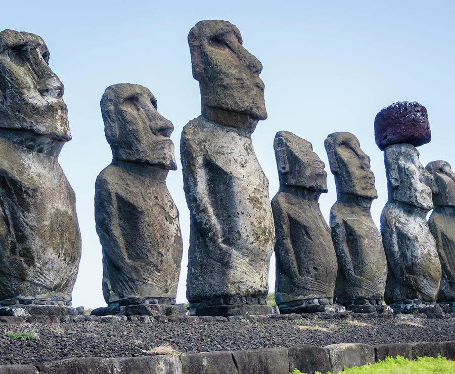

Basalt: The Rock of Fire and Earth
Chemical Formula: Primarily composed of silicates such as pyroxene, olivine, and plagioclase feldspar
Color: Dark grey to black
Hardness: 6 on the Mohs scale
Crystal System: Typically fine-grained aphanitic texture (igneous rock)
Localities: Found worldwide, particularly in volcanic regions like Iceland, Hawaii, the Columbia River Plateau (USA), and the Deccan Traps (India)
Common Uses: Construction (road base, cobblestones, building stones), sculptures, and insulation materials
Basalt is one of the most common and widespread igneous rocks on Earth, making up much of the oceanic crust and significant portions of continental crust. This dark-colored volcanic rock forms from the rapid cooling of lava at or near the Earth's surface, resulting in a fine-grained texture. Basalt has been used for thousands of years in various cultures for construction, tool-making, and artistic purposes due to its durability and abundance.
Known for its dense, hard structure and dark appearance, basalt is primarily composed of silicate minerals such as pyroxene and olivine, with plagioclase feldspar adding a minor component. While its appearance may seem simple, basalt’s geological significance and cultural uses make it one of the most important rocks in the Earth’s history.
Formation and Types of Basalt
Basalt forms through volcanic processes, typically at mid-ocean ridges, hotspots, or continental rift zones. When magma reaches the Earth’s surface through fissures or vents, it cools rapidly, forming the fine-grained basaltic rock.
Key Types of Basalt:
Tholeiitic Basalt
The most common type, it forms primarily at mid-ocean ridges and is rich in iron and magnesium but low in alkalis. Tholeiitic basalt is widespread in oceanic crust formations.
Alkaline Basalt
Richer in sodium and potassium, this type is often found in continental rift zones and volcanic islands. Alkaline basalts are typically formed after tholeiitic basalt in volcanic settings.
Pillow Basalt
Formed when basaltic lava erupts underwater, this variety takes on a characteristic pillow-like shape. Pillow basalts are commonly found on the ocean floor and volcanic island chains.
Flood Basalt
Resulting from massive volcanic eruptions, flood basalts cover vast areas, sometimes spanning millions of square kilometers. The Columbia River Basalt Group in the USA and the Deccan Traps in India are examples of such formations.
Structure and Properties of Basalt
Basalt’s fine-grained crystalline structure results from its rapid cooling at the Earth’s surface, making it a dense and durable rock. It typically contains microscopic crystals of minerals such as pyroxene, olivine, and feldspar.
- Hardness: With a rating of 6 on the Mohs scale, basalt is a relatively hard material suitable for industrial and construction applications.
- Color: Typically dark grey to black due to its high iron and magnesium content.
- Porosity: Basalt is generally dense, but some varieties may contain vesicles (small holes) formed by gas bubbles trapped in the rock during solidification.
- Texture: Basalt is mostly fine-grained (aphanitic), although some forms may display a porphyritic texture with larger crystals embedded in a fine-grained matrix.
Uses of Basalt
Basalt’s abundance and durability have made it a cornerstone in construction and industry. Its strength and resistance to weathering make it versatile across different applications.
1. Construction Material
Basalt has been a trusted construction material for centuries due to its strength and density, making it ideal for road base material, foundation stones, and cobblestones.
- Road and Rail Construction: Crushed basalt is used as an aggregate in road construction and as ballast beneath railways due to its load-bearing capacity.
- Buildings: Basalt blocks and slabs are used in building facades, floors, and retaining walls, especially in regions with volcanic activity.
2. Sculpture and Decorative Use
Basalt has been used for thousands of years in sculptures and monuments. Its fine texture allows for detailed carving, and its dark color provides a striking aesthetic.
- Famous Examples: The Moai statues of Easter Island, carved from basalt, are iconic examples of basalt's use in ancient sculpture.
- Ancient tools and weaponry made from basalt have been found across many civilizations, highlighting its utility in daily and ritualistic life.
3. Industrial Applications
Basalt is melted and spun into fibers to create basalt fiber, which is becoming an increasingly popular alternative to carbon or glass fiber due to its high heat resistance and strength.
- Basalt Fiber: Known for its thermal stability, basalt fiber is used in construction, automotive, and aerospace industries as a lightweight yet durable material.
Unusual Varieties of Basalt
While the majority of basalt is dark and dense, certain rare varieties of basalt are notable for their unique physical properties and uses.
1. Vesicular Basalt
This variety contains vesicles, or small holes, formed by gas bubbles in the lava. It is often used in construction as a lightweight aggregate.
2. Columnar Basalt
Characterized by its natural formation into hexagonal columns, columnar basalt is created by the cooling and contraction of thick lava flows. Giant’s Causeway in Northern Ireland is a well-known example.
3. Basaltic Glass (Tachylite)
This rare variety forms when basaltic lava cools so rapidly that it doesn’t crystallize, resulting in a glassy texture. It is mostly found in underwater volcanic regions.
Sourcing Locations of Basalt
Basalt is found worldwide, with some regions famous for their large basaltic formations and volcanic landscapes:
- Iceland: Known for its active volcanic environment, Iceland is one of the primary sources of basalt used in construction and decorative stone.
- Hawaii (USA): The Hawaiian Islands are rich in basalt, especially along volcanic slopes such as Mauna Loa and Kilauea.
- Columbia River Basalt Group (USA): This extensive basalt formation in the Pacific Northwest is the result of volcanic eruptions over 15 million years ago.
- Deccan Traps (India): The Deccan Traps are one of the largest volcanic features on Earth, consisting of flood basalt that covers much of central and western India.
Exploration and Mining of Basalt
The exploration and mining of basalt are essential processes for its various uses in construction and industry.
Exploration
Geological surveys and sampling are conducted in areas known for volcanic activity. Techniques such as aerial mapping and ground-based surveys help identify basalt deposits. In some cases, core drilling is used to assess the quality of basalt before mining.
Mining Methods
Basalt is typically mined through quarrying methods, either by open-pit or underground mining. The extraction process involves blasting or cutting the rock, followed by crushing and sorting it into different sizes for commercial use.
Processing
After extraction, basalt is processed into aggregate, slabs, or fibers depending on its intended use. It can be cut, polished, or ground for specific applications in construction or manufacturing.
Metaphysical Properties of Basalt
While basalt is primarily known for its practical uses, it also holds significance in metaphysical and spiritual practices.
- Grounding and Stability: Basalt is believed to have grounding energy due to its origin from molten lava deep within the Earth. Many believe it helps provide emotional stability and balance.
- Protection: Some spiritual practitioners associate basalt with protective energies, shielding the wearer or user from negative forces.
- Transformation and Rebirth: Due to its volcanic origins, basalt is also linked to transformation and renewal. It is thought to aid in overcoming emotional challenges and facilitating new beginnings.
Famous Finds and Basalt
Basalt formations are not only common but are also iconic natural and cultural landmarks around the world.
Giant’s Causeway (Northern Ireland)

A UNESCO World Heritage site, this natural formation consists of over 40,000 interlocking basalt columns created by volcanic activity 60 million years ago.
Columbia River Basalt Group (USA)
A large igneous province in the Pacific Northwest, famous for its extensive basalt flows covering 164,000 square kilometers.
Deccan Traps (India)
Covering much of central India, the Deccan Traps formed during an intense volcanic period over 66 million years ago, influencing global climate and contributing to mass extinctions.
Caring for Basalt
Basalt is durable but still requires care, particularly when used in decorative applications like countertops or sculptures:
- Sealing: For surfaces like countertops, sealing basalt can prevent staining as it can absorb liquids over time.
- Cleaning: Mild soap and water should be used to clean basalt. Harsh chemicals or acidic cleaners should be avoided as they may degrade the surface.
- Handling: Basalt is tough, but freezing and thawing cycles can cause fractures. Outdoor basalt installations should be protected from extreme temperature variations.
Conclusion
Basalt’s versatility, durability, and rich geological history make it one of the most important rocks on Earth. From ancient civilizations to modern industry, basalt has been used in countless applications, from construction and sculpture to cutting-edge fiber technology. Its widespread presence and fascinating natural formations, such as the Giant’s Causeway and the Deccan Traps, highlight basalt’s significance both geologically and culturally.